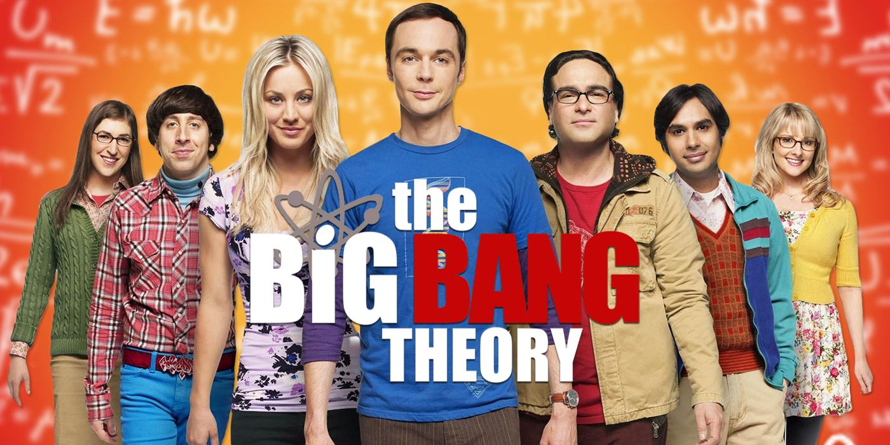
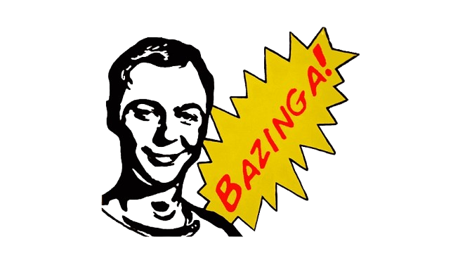

Curiosidades Fascinantes Sobre The Big Bang Theory
10 Curiosidades que você precisa saber!
The Big Bang Theory não é apenas uma sitcom; é um fenômeno cultural que capturou a imaginação de milhões de fãs em todo o mundo. Com seu humor inteligente, personagens cativantes e uma infinidade de referências à cultura pop, a série se tornou um marco na televisão moderna. Aqui estão 10 curiosidades fascinantes que todo fã deve conhecer:

Inspiração Real
A ideia original de The Big Bang Theory veio do criador Chuck Lorre, que, junto com seu co-criador Bill Prady, queria retratar a vida de nerds e cientistas de uma maneira acessível e engraçada. A série começou a ser desenvolvida em 2006, em um momento em que a cultura geek estava se tornando cada vez mais popular.
Relação Científica
Um dos elementos mais notáveis da série é sua fidelidade científica. Os roteiristas se certificaram de que as piadas e os conceitos científicos fossem precisos, contando com consultores como David Saltzberg, um físico da UCLA, que revisou os roteiros e ajudou a garantir que a linguagem científica fosse autêntica e compreensível para o público.
Cameos de Celebridades
The Big Bang Theory teve uma série de participações especiais de personalidades renomadas, tanto do mundo da ciência quanto da cultura pop. Entre as aparições mais memoráveis estão o físico teórico Stephen Hawking, que fez várias aparições ao longo da série, e figuras como Elon Musk e Carrie Fisher, que adicionaram um toque extra de brilho à série.
Personagens Baseados em Pessoas Reais
Os personagens principais, Sheldon Cooper e Leonard Hofstadter, foram inspirados nas próprias experiências dos criadores. Sheldon, com seu comportamento peculiar e inteligência excepcional, reflete aspectos da personalidade de Lorre, enquanto Leonard, o romântico do grupo, representa Prady. Essa inspiração pessoal ajudou a criar personagens autênticos e relatáveis.
Frase Famosa
A famosa frase "Bazinga!", usada por Sheldon para marcar suas brincadeiras e pegadinhas, se tornou um símbolo do humor único da série. A palavra rapidamente se popularizou entre os fãs, transformando-se em um bordão reconhecível que representa o estilo de humor inteligente e sarcástico da série.

O Apartamento de Sheldon e Leonard
O apartamento onde Sheldon e Leonard vivem se tornou um dos cenários mais icônicos da televisão. Cada detalhe, desde os pôsteres de ciência nas paredes até o layout do espaço, foi projetado para refletir as personalidades dos personagens. A dinâmica entre os dois, além do ambiente que os cerca, proporcionou muitas das situações engraçadas da série.
Abertura Musical
A música tema, Big Bang Theory Theme, da banda canadense Barenaked Ladies, é um resumo conciso da história do universo. Com letras que falam sobre o Big Bang e o desenvolvimento da vida na Terra, a canção se tornou uma parte indelével da identidade da série, e muitos fãs a reconhecem instantaneamente.
Mudança de Gênero
Embora a série tenha começado com um foco maior nos personagens masculinos, com o tempo, ela evoluiu para incluir mais personagens femininas fortes. Penny, Amy e Bernadette não apenas se tornaram parte integral da trama, mas também trouxeram novas dinâmicas e histórias que enriqueceram o enredo, tornando a série mais inclusiva e diversificada.
Fidelidade a Referências Geek
The Big Bang Theory é repleta de referências a quadrinhos, videogames e séries de ficção científica, celebrando a cultura geek de maneira divertida. As interações dos personagens frequentemente incluem diálogos sobre Star Wars, Star Trek, e jogos de vídeo game, proporcionando um deleite especial para os fãs de cultura pop.
Sucesso Comercial
Desde sua estreia, The Big Bang Theory se tornou uma das sitcoms de maior sucesso da televisão. A série não apenas conquistou prêmios e reconhecimento crítico, mas também gerou bilhões em receita através de merchandising, syndication e vendas de streaming. O legado da série continua a influenciar novas gerações de comédias e programas de televisão.